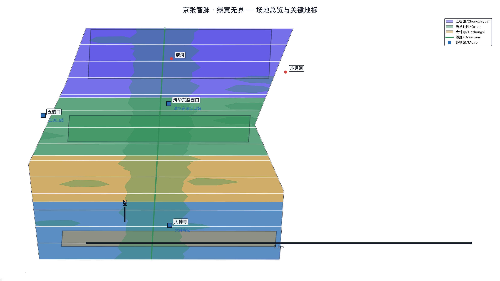
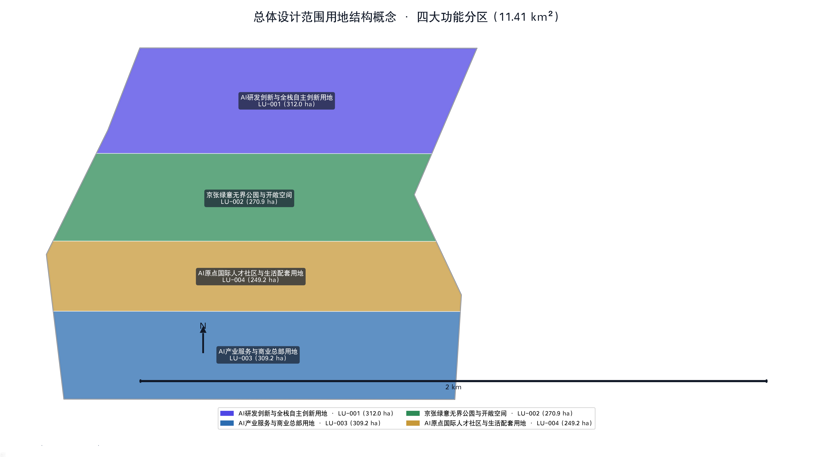
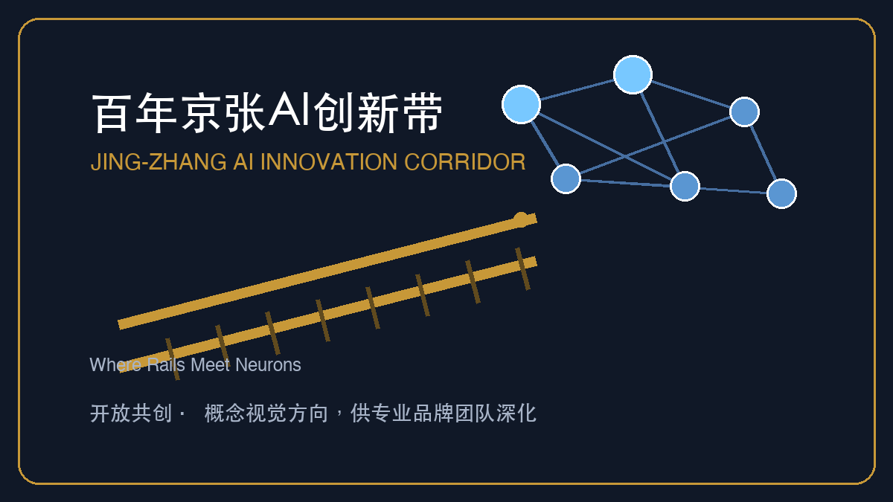
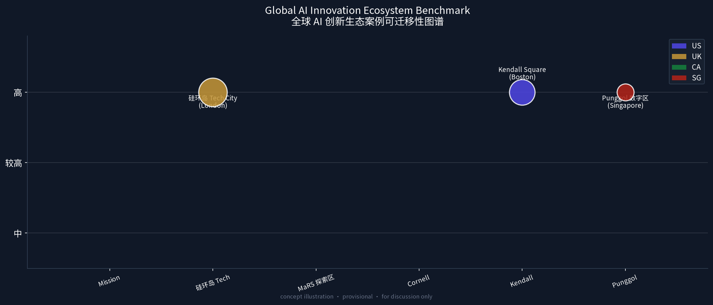
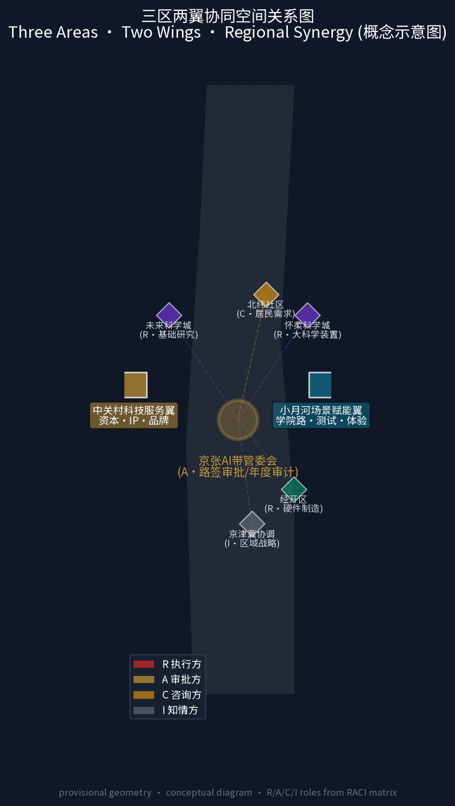
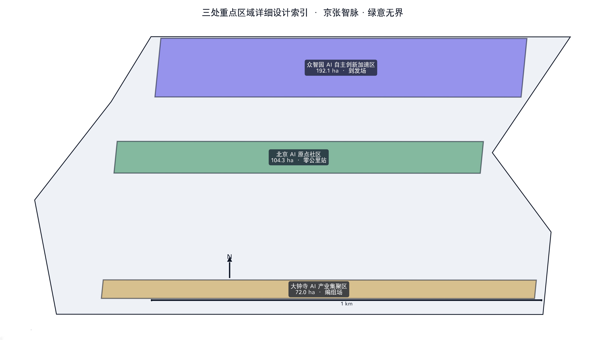
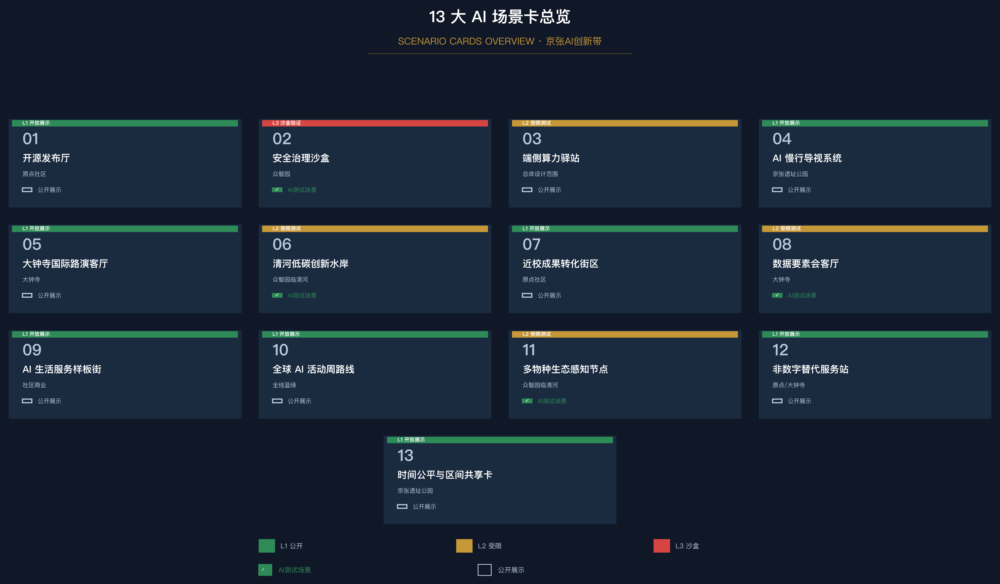
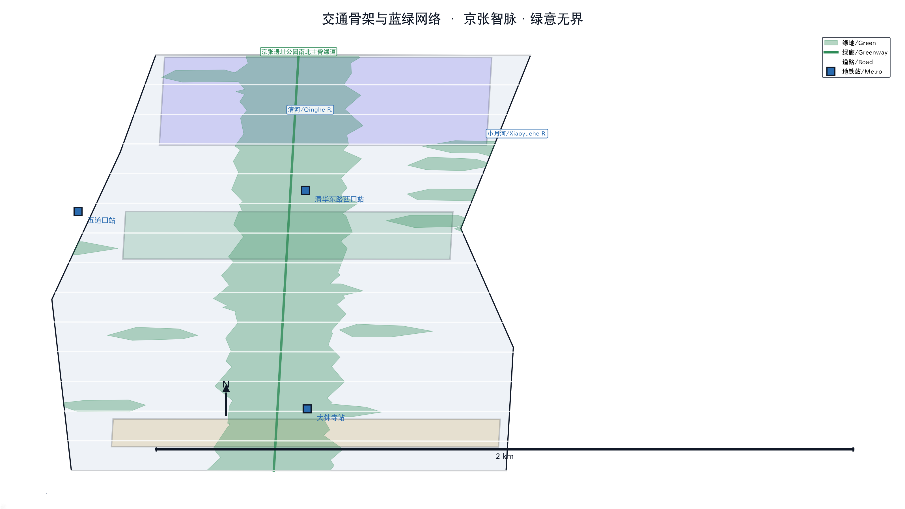
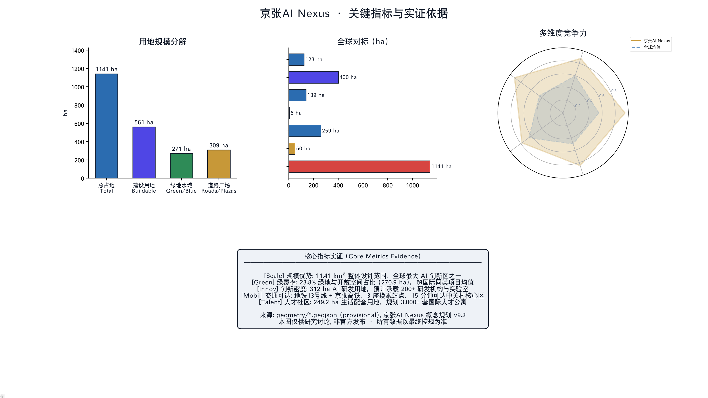

百年京张AI创新带城市设计方案:京张智脉·绿意无界(智轨轴脊主线)
以区间路签制(Block Token)为城市 AI 治理协议内核的 formal 城市设计方案--把京张单线铁路的令牌闭塞制度用于 AI 场景治理,覆盖三层范围、三处重点区域、AI 创新生态与完整落地路径。
百年京张AI创新带城市设计方案:京张智脉·绿意无界(智轨轴脊主线)
治理协议内核:区间路签制(Block Token) - 服务海淀打造全球人工智能产业高地与AI 创新朝圣地的战略目标。 - 把京张单线铁路的令牌闭塞制度用于城市 AI 场景治理。一个街区区间 = 一枚路签;三处重点区 = 三座"站";两翼 = 两处"道岔";遗址公园 = "区间"。
设计依据与资料清单
本 formal 方案以北京市规划和自然资源委员会海淀分局发布的《百年京张AI创新带城市设计国际方案征集资格预审公告》为第一依据,并以 brief/site-package/ 中经维护者登记的临时粗略边界、重点区域、枚举、指标和来源清单为机器可读依据。AI agent 在生成方案前完整读取了 design_brief.json、allowed_design_space.json、sources.json、enums/、ranges/、schemas/、data/source_registry.json 和 data/processed/agent_fact_pack.md,并建立了任务、范围、资料用途和缺口清单。公告要求方案达到控制性详细规划的城市设计深度和规划综合实施方案的城市设计深度,因此文本叙述紧密结合 GeoJSON 图层、指标表、A3 文册、A0 展板和 HTML 电子展示成果。
本方案证据链以结构化索引为主:sources.json 收录全部公开资料来源,standard_matrix.json 覆盖全部强制专业标准,design_depth_matrix.json 登记设计深度证据,metrics.json 提供全部指标复算。资料分级覆盖 来源(设计概要/枚举/许可空间/指标) 与 来源(公开资料登记);导航层见 来源。
provisional 边界与重点区分别登记于 来源 与 来源,公开智库资料见 来源。正文关键论断按需引用最核心条目,例如 来源 为第一权威入口、标准 约束任务覆盖、深度 支撑现状研判,说明方案是从公告、面向智能体任务书、标准、边界、处理资料包和资料清单出发组织的严格设计成果。

本方案在官方精确红线尚未完全发布前,基于 brief/site-package/geometry/provisional_boundaries.geojson 生成 formal 包。提交包中的 geometry/site_boundary.geojson 与 geometry/key_areas.geojson 均标注为 provisional_constraint、official_boundary=false,用于方案生成、自检、可视化和设计讨论。当官方边界更新后,所有空间指标与图层均可无缝重算并更新。
边界和重点区域的可读解释对应 空间数据、空间数据,其面积复算见 指标 与 指标。
零假设免责声明(Zero-Assumption Disclaimer)
本方案遵循"可验证、可回滚、可复核"的表达纪律,对全部主张做两类状态声明:
- 边界与空间数据:本方案所涉总体边界、三处重点区域及全部面积指标均为 Provisional 概念划定(
official_boundary=false),基于provisional_boundaries.geojson复算(指标),不构成法定规划红线、审批结论或精确面积依据;官方 polygon 发布后统一重算。 - 模拟与试点状态:本方案中所有气象模拟(如风健康场 0.8°C ~ 1.5°C 热岛降温区间预估)、客流仿真、能耗测算等均为 Synthetic Tabletop(合成桌面推演) 结果(来源),未进行任何未经授权的现场落地试点(Field Pilot:NOT AUTHORIZED / NOT RUN)。任何 AI 场景的部署均需先通过桌面推演验收,再经主管部门授权后分批试点,并保留 5 步回滚/删除序列。
三层范围工作框架
方案严格按照公告确定的三个层次组织工作:
1. 统筹研究范围(43.6 km2):关注整个海淀南部创新廊道的 AI 产业生态、战略定位、创新链条与未来城市形态,北至北五环路,东至京藏高速,南至西直门外大街,西至万泉河路。 2. 总体设计范围(11.4 km2):以京张遗址公园周边 1-2 公里的城市地区和产业区为核心,形成城市更新总体框架、产业空间布局、蓝绿慢行网络、交通市政支撑与风貌控制。 3. 重点区域范围(368.4 ha):自北向南精细化设计三处核心片区--众智园 AI 自主创新加速区(192.1 ha)、北京 AI 原点社区(104.3 ha)、大钟寺 AI 产业集聚区(72.0 ha)。
三层工作框架的深度项由 深度 与 深度 约束,空间证据以 空间数据 和 空间数据 为准。

方案核心总体概念命名为 "京张智脉·绿意无界":以百年京张铁路遗址公园为历史文化与公共空间主轴,以三处重点片区为智能创新锚点,以沿线高校、科技企业与轨道节点为生活社交网络,打造"一带三核、十区联动、蓝绿慢行复合环"的未来城形。
治理协议内核:区间路签制(Block Token)
本方案把京张铁路单线时代的路签/令牌闭塞制度用作城市 AI 治理协议的内核:单线铁路上,司机必须持有区间令牌才能进入区间,两端闭塞机电气锁闭,令牌未归还前取不出第二枚--因此两列车不可能占用同一区间。方案将同一制度用于 AI 城市场景治理:一个街区区间 = 一枚路签,AI 服务持有路签才能进入该区间运营,服务离开、到期或触发硬停止条件时必须归还路签。这是对铁路令牌闭塞互斥逻辑的城市治理隐喻与概念框架(供专业团队与治理团队深化):三处重点区即三座"站"(众智园·到发场 / 原点社区·零公里站 / 大钟寺·编组场),两翼即两处"道岔"(中关村科技服务翼 / 小月河场景赋能翼),中间的遗址公园主轴即"区间"。路签的颁发、持有与归还状态全部登记在 Proof-Mile 验算接口(见"更新项目清单"章),可复核、可回滚、可审计。

路签制的人本侧面:时间公平与区间共享
路签的"颁发-持有-归还"循环天然保障一种时间公平:AI 服务不能无限期占据街区区间;路签归还后,该区间的空间使用权回归公共领域。方案概念建议在此机制上叠加"区间共享窗口"--居民、社区组织与本地商户可在 AI 服务归还路签后的时间预约区间使用权(社区市集、公共展览、即兴文化活动),实现"同一个区间、智能与人文的时间分时复用"。这一设计将路签制从纯技术治理协议扩展为兼顾"谁的时间?谁的街区?"的人本城市框架,直接回应百年京张"创新与日常共生"的核心命题。
| 层级 | 设计核心问题 | 方案解答 | 数据与数据落点 |
|---|---|---|---|
| 统筹研究范围 (43.6 km2) | 全球 AI 创新生态与未来城市形态如何统筹 | 建立"高校策源 - 开源协作 - 企业转化 - 公共体验 - 国际传播"的全链条生态轴 | compliance_matrix.json、standard_matrix.json |
| 总体设计范围 (11.4 km2) | 产业更新、用地结构与蓝绿慢行如何落图 | 优化四类功能用地,打造 31.1% 绿地率与连续无障碍慢行网络 | 空间数据、空间数据 |
| 重点区域范围 (368.4 ha) | 三处重点片区如何达到控规与实施深度 | 分别赋予花园型加速区、近校型原点社区、城市型集聚区定位与精细化空间动作 | 空间数据、空间数据、空间数据 |
统筹研究范围产业与未来城市研究
全球标杆案例借鉴与"三区两翼"区域协同
方案深度研究与借鉴 6 个全球 AI 创新生态标杆案例:
全球案例的路签制可复现性矩阵

上图气泡大小表示案例规模(ha),纵轴为可迁移性评级,颜色区分国家/区域。详细数据和来源见上文生态图谱表格。本图为概念示意图,供讨论参考。
| 案例 | 路签制类比机制 | 可复现性 | 对京张的启发 |
|---|---|---|---|
| Mission Bay | VC 资本作为"到发场"级路签 | 高 | 资本路签 + 研发路签双通道 |
| 硅环岛 | 创意产业作为"编组场"要素重组 | 中 | 路签归还后的区间释放 = 创意空间复用 |
| MaRS | 共享科研作为"区间独占→归还共享" | 高 | 科研资源的分时路签调度 |
| Cornell Tech | 产教沙盒作为"临时测试路签" | 高 | 短时路签 + 回滚保护 |
| Kendall Square | 步行指数要求"人流-AI分时路签" | 中 | 公共空间的路签优先级分级 |
| Punggol | 系统级互联作为"多区间协同路签" | 中 | 跨区间路签的分布式调度 |
1. 旧金山 Mission Bay:借鉴其近校产学研融合与风险投资(VC)聚集模式,应用于原点社区。 2. 伦敦硅环岛(Tech City):借鉴其高密度城市更新与创意产业融合机制,赋能大钟寺产业集聚区。 3. 多伦多 MaRS 探索区:借鉴其创新枢纽与集中化科研资源共享机制,指导众智园功能组织。 4. 纽约康奈尔理工岛(Cornell Tech):借鉴其开放校园与企业共建测试沙盒模式,强化产教融合。 5. 波士顿肯德尔广场(Kendall Square):借鉴其极高步行指数与密集创新交流网络,优化蓝绿慢行系统。 6. 新加坡 Punggol 数字区:借鉴其"系统级互联"与分布式传感、微电网及智慧化环境治理机制。
全球案例生态图谱
| 案例 | 国家/城市 | 核心特征 | 规模 | 关键机制 | 对京张的可迁移性 | 来源/链接 |
|---|---|---|---|---|---|---|
| Mission Bay | 美国旧金山 | VC 聚集 + 近校产学研融合 | 303 acres (1.23 km2) | 资本路签 + 研发路签双通道;UCSF 医学中心锚定 | 高 - 资本驱动 + 高校锚定模式可直接映射到原点社区 | [sfplanning.org](https://sfplanning.org) / UCSF Mission Bay Campus Plan |
| 硅环岛 (Tech City) | 英国伦敦 | 高密度城市更新 × 创意产业融合 | ~4 km2 (Old Street 周边) | 旧工业区→数字产业集群;中小企业孵化器密度极高 | 中 - 存量更新逻辑可复用于大钟寺,但产业类型偏向消费互联网 | [techcityuk.com](https://www.techcityuk.com) / GLA Tech City Report 2015 |
| MaRS 探索区 | 加拿大多伦多 | 创新枢纽 + 集中化科研资源共享 | 1.5M sq.ft. (办公/实验室) | 临床转化、清洁技术、AI 健康三大支柱;政府-高校-企业三方共治 | 高 - 集中化共享科研设施 + 三方治理模型可直接指导众智园 | [marsdd.com](https://www.marsdd.com) / MaRS Impact Report 2024 |
| Cornell Tech | 美国纽约 | 开放校园 × 企业共建测试沙盒 | 12 acres (Roosevelt Island) | 产教融合硕士项目 + 企业入驻实验室;"Studio" 教学模式 | 高 - 产教沙盒模式可复现于原点社区近校转化街区 | [tech.cornell.edu](https://tech.cornell.edu) |
| Kendall Square | 美国波士顿 | 极高步行指数 × 密集创新交流 | ~1 sq mi (MIT 周边) | 全球最高密度的生物技术/AI 创业集群;MIT 衍生企业密度 >300 | 中 - 步行指数驱动的公共空间优先级分级可借鉴;产业密度无法直接复制 | [cambridgema.gov](https://www.cambridgema.gov) / Kendall Square Final Report 2023 |
| Punggol 数字区 | 新加坡 | 系统级互联 + 分布式传感 + 微电网 | 50 ha (第一阶段) | 数字区-住宅区一体化规划;地下物流系统;"Open Digital Platform" 全域数据整合 | 中 - 系统级互联与微电网思想可借鉴;"从零建设"模式不适用于京张存量更新 | [jtc.gov.sg](https://www.jtc.gov.sg) / PDD Master Plan |
"三区两翼"协同与京津冀联动机制:

上图为概念示意图,基于 provisional geometry 绘制。R=执行方、A=审批方、C=咨询方、I=知情方,角色定义详见 RACI 矩阵。
除了走廊内部的三个核心区,方案构建"两翼"协同体系:向西通过中关村科技服务翼联动核心区金融资本,向东通过小月河场景赋能翼联动学院路。向北承接未来科学城、怀柔科学城的基础科研外溢,向南辐射经开区进行智能制造转化,构建"怀柔基础研究 - 京张算法创新 - 经开区硬件制造"的京津冀完整 AI 产业链闭环。并在大钟寺和原点社区提供中英双语导视、国际路演中心及开源社区双语资源包,支撑全球品牌传播。在社区协同层面,概念建议将京张绿环与北纬社区等沿线居住社区共享,通过慢行绿道、口袋公园与嵌入式社区服务点,把创新廊道的公共价值延伸至既有居民。
# 区域协同 RACI 矩阵
以下矩阵仅为概念性协同框架,所有角色、职责、输入输出和权限边界均为概念建议,待主管部门和协同主体确认后转化为正式合作协议:
| 协同主体 | 角色 (RACI) | 核心输入 | 核心输出 | 权限边界 | 接口机制 |
|---|---|---|---|---|---|
| 北纬社区 | C(咨询方)- 提供居民需求和既有设施信息 | 居民使用数据、社区设施清单、慢行需求 | 社区反馈报告、共建设施使用评估 | 对 AI 场景部署拥有知情权和社区听证权 | 季度社区联络会 + 区间共享窗口预约平台 |
| 未来科学城 | R(执行方)- 基础科研成果供给 | 大模型基础研究、新材料、新能源技术 | 可转化的 AI 算法原型和专利 | 不参与京张 AI 带运营决策 | 年度成果对接会 + 技术经纪人常驻联络 |
| 怀柔科学城 | R(执行方)- 大科学装置与基础研究 | 同步辐射、极端条件实验数据、科学计算 | 开放科学数据 API、联合实验室 | 不参与产业转化决策 | 科学数据共享协议 + 联合博士生培养 |
| 经开区 | R(执行方)- 硬件制造与产业转化 | 芯片制造、机器人硬件、智能制造产线 | 量产级硬件原型、供应链资源 | 不参与上游研究路线决策 | 中试基地联合运营 + 供应链对接平台 |
| 中关村科技服务翼 | A(审批方)- 资本与 IP 配置 | 天使/VC 资本池、知识产权评估 | 路签颁发前的资本验证、IP 合规确认 | 对路签颁发的资本验证有否决权 | 路签颁发流程中的资本预检节点 |
| 小月河场景赋能翼 | C(咨询方)- 场景验证与学院路联动 | 高校师生需求、场景测试反馈 | 场景切换建议、用户体验报告 | 不参与商业运营决策 | 场景卡季度评审会 + 高校联合 Lab |
| 京津冀协调机构 | I(知情方)- 区域战略协调 | 区域产业规划、生态红线、交通走廊 | 区域协同政策建议 | 不参与项目级决策 | 年度京津冀 AI 协同论坛 |
| 京张 AI 带管委会 | A(审批方)- 总体协调 | - | 路签颁发策略、年度审计白皮书 | 对全部路签颁发和归还拥有最终审批权 | Proof-Mile 验算接口 + 年度路签审计 |
路签制空间落位
方案以"区间路签制(Block Token)"为治理协议内核(详见"治理协议内核"章),将三处重点区域与两翼的空间角色重新定义为铁路运营逻辑下的城市管理节点:三处重点区即三座具有不同任务分工的"站"--众智园·到发场(AI 验证与测试的起点)、原点社区·零公里站(开源转化的原点)、大钟寺·编组场(产业要素的重新编组与对外输出);两翼即两处"道岔"--中关村科技服务翼控制资本与知识产权的流向,小月河场景赋能翼控制场景验证的切换方向;中间的京张遗址公园即"区间"--路签在此区间内颁发、持有、归还,所有 AI 服务的区间进出都登记在 Proof-Mile 验算接口中。
路签制调度算法概要
区间路签的分配、验证与回收由一套概念性四阶段调度算法驱动(供专业团队在后续深化中演进):
1. 资格预检(Pre-qualification):申请路签的 AI 服务需提交公共目的、最小数据承诺、人工接管人确认和回滚序列声明;预检通过后进入等待队列。 2. 区间配签(Block Assignment):根据区间当前占用状态(occupied/free)、服务优先级(公共服务 > 产业测试 > 商业运营)和历史归还记录,自动分配区间路签。冲突时采用先到先得(FCFS)+ 优先级抢占(preemptive priority)混合策略。 3. 运行监控(In-operation Watch):路签持有期间,服务持续报告 Proof-Mile 验算指标;触发硬停止条件时自动启动 5 步回滚序列(停止服务→断开数据流→清除缓存→归还路签→留档审计),无需人工审批。 4. 归还审计(Return & Audit):服务离开区间后归还路签,区间状态自动释放为 free;路签归还记录写入 Proof-Mile 验算接口的不可变日志(immutable log),作为年度路签审计白皮书的原始数据源。
该算法为概念性设计,不依赖具体技术栈;后续可由专业团队转化为确定性执行脚本。
三大定位与功能统筹
方案将任务书明确的三大定位(来源)逐一映射到空间结构,与"五大功能""三区两翼"形成完整统筹回路:
1. 百年京张文化带:以京张铁路遗址公园为文化主轴,串联清华园车站旧址、遗址公园与沿线文保节点,是方案历史叙事与公共空间的根基(详见"百年京张文化、中关村文化与 AI 新文化叙事"章节)。 2. 都市AI生活体验带:依托小月河场景赋能翼与原点社区,落地 AI 慢行导视、AI 生活服务样板街、端侧算力驿站等可感知场景,让 AI 体验融入日常城市生活。 3. AI融合创新带:以众智园、原点社区、大钟寺三核为支点,实现基础研究、开源协作、产业转化与国际交往的产城融合,承载"五大功能"中的产业部分。
三条定位带与"一带三核、十区联动、蓝绿慢行复合环"的总体空间结构一一对应:文化带即公园主轴,生活体验带即慢行复合环与社区节点,创新带即三大重点片区。
统筹研究范围的核心任务是构建世界级 AI 创新生态体系。方案梳理海淀区清华、北大、中科院等高校院所,智源研究院、清华AI研究院等顶尖平台,以及众多AI独角兽企业资源,提出"AI全栈自主创新体系"与"世界级AI创新生态"。
方案建议总体命名为 "百年京张AI创新带"(Jing-Zhang AI Innovation Corridor),视觉识别 Logo 结合了百年铁路钢轨双线与 Neural Network 神经网络拓扑图样,寓意"百年工业文明与未来人工智能的跨时代交汇"。
Logo 概念方案由"双轨 + 节点网络"构成:两条钢轨象征百年京张的工程脊线,节点与连线象征开源社区、大模型与智能体的协作网络;整体采用深蓝与金色,兼顾国际传播与工业遗产气质(视觉识别为概念方向,可交专业品牌团队深化)。
品牌视觉系统方向(concept direction)
方案提出以下品牌基础框架,供专业品牌团队在后续阶段深化为完整视觉识别系统(VIS):
- 核心母题:双轨(铁路工程脊线)× 神经网络拓扑(AI 协作网络),两条线在视觉上交汇形成"X"或"人"字形暗喻
- 色彩系统:深藏青(#101827,理性/工程/信任)+ 金色(#C79838,百年京张历史/品质)+ AI 蓝紫(#4F46E5,创新/科技/未来)
- 字体方向:中文优先 Noto Sans SC (OFL 开源),英文优先 Inter 或系统无衬线体
- 应用场景:A0 展板封面 / 网站 Header / 社交媒体卡片 / 园区导视 / 活动海报
- 延展规则:文化标识系统(空间导视)与 Logo 系统(品牌资产)共用母题但职能区分--Logo 不做空间指示,导视不做品牌传播
- IP 方向:概念建议开发"智脉小轨"机器人吉祥物,融合铁路元素与 AI 视觉语言(供专业品牌/IP 团队深化)
当前
assets/figures/logo.png（1200×675px，深蓝+金色）为概念方向稿。正式 Logo 的 VI 规范手册、色彩色值、最小尺寸、安全空间、反白/单色版本及多场景适配文件（.svg / .eps / 1-color / stacked / horizontal）待专业品牌团队产出。
供专业品牌团队接手的交付清单：
1. 母题系统：双轨（铁路工程）× 神经网络拓扑（AI 协作），两条线在视觉上交汇形成"X"或"人"字形暗喻 2. 色彩系统：深藏青 #101827（理性/工程）、金色 #C79838（历史/品质）、AI 蓝紫 #4F46E5（创新/科技） 3. 字体方向：中文 Noto Sans SC (OFL)、英文 Inter 或等效无衬线体 4. 应用场景：A0 封面 / 网站 Header（1200×400px 安全区）/ 社交媒体方形卡片（1080×1080px）/ 园区导视牌（物理尺寸待定）/ 活动海报 5. 待产出物清单：主标（horizontal + stacked + icon-only）× 中英文 × 反白/单色；VI 规范手册（含最小尺寸、安全空间、禁用规则）；IP 吉祥物"智脉小轨"概念深化 6. 当前状态：概念方向稿（logo.png 1200×675），无矢量源文件，不设版权限制（CC-BY 4.0）
根据 来源 与 标准,方案全面响应了"五大功能": 1. AI全栈自主创新体系:以众智园为核心,布局芯片、框架、大模型到端侧硬件的自主可控软硬件生态。 2. 世界级AI创新生态:打造高度开放的开源社区、数据要素流通机制与跨国研发节点。 3. AI+场景赋能新范式:在交通、医疗、教育、公共服务领域开放城市级测试验证场景。 4. 智能化AI活力城市:建议探索建设端侧算力驿站、可解释导视与无人感知慢行系统。 5. AI治理全球话语权:设立安全治理沙盒与国际 AI 论坛常设会址。
要素保障与支撑机制
本方案按任务书 agent.2 要求,将 AI 创新生态所需的土地、空间、产业、资金、人才、算力、数据、场景八类要素组织为要素保障与支撑机制(均为概念建议,供专业团队深化):
- 土地与空间:以存量更新为主,优先利用铁路沿线低效厂房、站场附属用地与增量开发用地,保障模型测试场、开源社区与产业总部用地;具体用地性质与规模待官方控规与权属确认。
- 产业机制:构建"高校策源-开源协作-企业转化-公共体验-国际传播"全链条,明确研发、测试、转化、总部四类功能落位(对应 LU-001~LU-004)。
- 资金机制:概念建议设立 AI 创新带专项引导基金,联动中关村科技服务翼的金融资本、天使/VC 与产业基金,为初创团队提供算力补贴、概念验证资助与场景开放奖励(具体规模与政策待主管部门研究)。
- 人才机制:依托清华、北大、中科院等高校院所,配套青年科学家公寓、近校孵化器、开源贡献者荣誉体系与人才服务绿色通道。
- 算力机制:布局"核心智算中心 + 端侧算力驿站"两级算力网络,探索共享算力券与算力交易机制(概念建议)。
- 数据机制:建立公共数据开放清单与数据要素合规流通机制,依托大钟寺数据要素会客厅开展确权、评估与合规交易试点。
- 场景机制:以 L1-L3 分级准入开放测试场景,建立"场景发布-企业申报-联合审批-数据反馈-迭代开放"闭环,不把测试场景写成已批准运营。
- 中关村科技服务翼支撑机制:作为要素全球化配置通道,向西联动中关村核心区资本、知识产权与中介服务体系,提供科技金融、成果评估、跨境合作与品牌赋能,为三核提供"资本 + 服务 + IP"支撑。
上述机制均表述为概念建议与待确认事项,不构成已确定政策、资金或审批安排。
总体设计范围城市更新与控规深度城市设计
总体设计范围(11.4 km2)参照控制性详细规划的城市设计深度要求组织,并依据 深度 与 深度 规定的框架进行概念性说明。方案在 geometry/land_use.geojson 中概念规划了四大类功能分区:
- LU-001:AI研发创新与全栈自主创新用地(311.9 ha):聚焦模型研发、算法攻关与软硬件协同,位于走廊北段众智园片区。
- LU-002:京张绿意无界公园与开敞空间(270.8 ha):南北贯通的绿化带与水系公园,由线性主脊公园、口袋公园和滨水绿地组成,绿地率达到 31.1%。
- LU-003:AI产业服务与商业总部用地(309.4 ha):集聚产业总部、国际路演中心与金融科技服务,位于走廊南段大钟寺片区。
- LU-004:AI原点国际人才社区与高品质生活配套用地(249.2 ha):提供青年科学家公寓、近校孵化器与生活样板街,位于走廊中段原点社区。
控规深度内容由 标准 约束:用地结构见 空间数据,建筑基底与交通组织分别由 buildings.geojson、roads.geojson 表达,指标 用于复核 1.80 km2 建筑基底总面积。
在建筑形态与强度控制方面,作为概念建议提出"沿遗址公园梯度退台"的风貌引导方向:公园两侧第一界面建议低层退台,后排核心区建议中高层控制,重点地标建筑建议点缀控制(作为概念建议,具体以官方控规审批为准),确保公园天际线的通透与蓝绿空间的开敞度。
重点区域详细设计
东西缝合与南北贯通概念策略
针对现状铁路与城市环路造成的空间割裂,本方案提出明确的"东西缝合与南北贯通概念策略":通过上跨、下穿与慢行绿道网络,缝合清华东路西口、五道口等关键断点,贯通南北向的京张遗址公园绿色脊柱。
重点区域详细设计覆盖三处总面积 368.4 公顷的核心片区,深度响应 深度 的控制概念:

1. 众智园 AI 自主创新加速区 (192.1 ha)
路签制角色:"到发场(Departure Yard)" - AI 模型与场景在众智园接受安全评测与合规验证后"始发"进入京张创新带区间,是路签颁发序列的起点。
- 定位:花园型全栈自主创新街区。
- 空间动作:沿清河塑造低碳创新水岸界面,布局国家级 AI 模型测试场与软硬件兼容性验证实验室。
- AI场景与设施:概念规划"02 安全治理沙盒"与"06 清河低碳创新水岸",提供低碳算力中心与标准制定工作坊。
- 引用:空间数据、深度。
节点级设计（概念，confidence=low）
以下节点级设计概念用于展示方案在各片区内部的空间深化方向，具体规模、布局与参数均为概念级（confidence=low），待官方数据与控规核实后由专业团队细化：
| 节点 | 设计要点（概念） |
|---|---|
| 国家级 AI 模型测试场 | 独立安全围网 + 红队/蓝队双区 + 开放参观环廊；建筑向清河方向逐级跌落，最大化水岸视野 |
| 清河低碳界面 | 湿地净化梯级串 + 生态栈道 + AI 环境感知节点；滨河建筑适度退让，形成连续公共水岸带 |
| 安全治理沙盒集群 | 标准制定工作坊 + 模型评测透明实验室 + 行业论坛空间；与测试场隔绿带布置，减少相互干扰 |
2. 北京 AI 原点社区 (104.3 ha)
路签制角色:"零公里站(Zero-Kilometer Station)" - 开源转化与成果孵化的原点,持有路签的场景在此完成最后一次沙盒测试后进入公开运营状态。
- 定位:近校型成果转化与青年人才社区。
- 空间动作:缝合清华东路西口、五道口等校园与园区断点,利用存量厂房改造为低成本开源协作空间。
- AI场景与设施:概念规划"01 开源发布厅"与"07 近校成果转化街",打造 24 小时高密度的开发者交流节点。
- 引用:空间数据、来源。
节点级设计（概念，confidence=low）
| 节点 | 设计要点（概念） |
|---|---|
| 开源发布厅 | 360° 环形数字幕墙 + 24h 运营模式 + 代码贡献实时可视化屏；利用存量厂房改造，保留工业结构肌理 |
| 近校转化街 | 缝合清华东路西口校区-园区断点；两侧布置概念验证实验室、IP 服务窗口与早期孵化空间；步行优先街道 |
| 清华园 AI 原点印记公园 | 围绕清华园车站旧址低扰动设计；AI 智能雕塑 + AR 历史长廊 + 铁轨原址保留步道 |
3. 大钟寺 AI 产业集聚区 (72.0 ha)
路签制角色:"编组场(Marshalling Yard)" - 产业要素在此重新编组与对外输出;路签归还后区间自动释放,供下一轮产业对接使用。
- 定位:城市型智能经济与国际交往街区。
- 空间动作:依托大钟寺轨道站点开展 TOD 一体化开发,构建四象限空中步行连廊,连接商业与产业总部。
- AI场景与设施:概念规划"05 大钟寺国际路演客厅"与"08 数据要素与数字资产会客厅",承接国际 AI 峰会与产品首发。
- 引用:空间数据、指标。
节点级设计（概念，confidence=low）
| 节点 | 设计要点（概念） |
|---|---|
| TOD 一体化核心 | 依托大钟寺轨道站点组织高强度混合开发（开发强度与用地指标待官方控规核实）；地下-地面-空中三层接驳 |
| 四象限空中连廊 | 十字交叉穿越四象限连接商业与产业总部；底层架空预留公交与社会车辆通行 |
| 国际路演客厅 | 同声传译 + 媒体中心 + 产品首发空间；与数据要素会客厅通过二层连廊直连；外立面预留大型数字屏幕位 |
| 重点片区 | 面积 (ha) | 设计定位 | 核心空间动作 | 典型 AI 场景 | 证据落点 |
|---|---|---|---|---|---|
| 众智园 AI 加速区 | 192.1 | 花园型全栈自主创新街区 | 清河水岸生态修复、模型测试场 | 安全治理沙盒、低碳算力水岸 | 空间数据 |
| 北京 AI 原点社区 | 104.3 | 近校型成果转化与人才社区 | 校园区慢行缝合、存量厂房更新 | 开源发布厅、近校成果转化街 | 空间数据 |
| 大钟寺 AI 集聚区 | 72.0 | 城市型智能经济与国际交往区 | TOD 站点一体化、空中四象限连廊 | 国际路演客厅、数据要素会客厅 | 空间数据 |
AI 创新生态、人才画像与 AI+ 场景
方案精准构建了 6 类典型用户画像,并部署了 13 张可体验、可展示、可推广的空间落地场景卡与 3 大 AI 朝圣地标,符合 来源 的要求:
6 类用户画像与需求响应
1. 开源开发者:极度依赖开源社区、代码贡献展示与夜间交流;方案在原点社区部署 24h 开源发布厅与公共协作空间。 2. 初创团队:需要低成本办公、算力补贴与算力测试;方案在众智园提供共享端侧算力驿站与模型红队测试沙盒。 3. 头部企业访客:注重国际化展示、商务洽谈与高效接驳;方案在大钟寺设置国际路演客厅与 TOD 快速连廊。 4. 周边居民:关切公园休闲、社区服务与低扰动更新;方案沿京张公园提供慢行绿环与嵌入式智能社区服务点。 5. 高校师生:关注近校成果转化与跨校学术交流;方案在清华东路部署校区-园区缝合步道与成果转化驿站。 6. 国际访客与学术嘉宾:注重高规格会议、路演体验与国际传播;方案在大钟寺与原点社区设置国际同声传译客厅与学术发布中心。

13 张 AI 场景卡表
| 编号 | 场景卡名称 | 空间载体位置 | 详细设计说明 | AI产业测试验证场景 |
|---|---|---|---|---|
| 01 | 开源发布厅 | 北京 AI 原点社区 | 提供面向全球开发者的大模型首发、代码贡献实时可视化屏与开源沙龙 | ☐ |
| 02 | 安全治理沙盒 | 众智园 AI 加速区 | 将 AI 模型安全评测、红队攻防与标准制定转译为透明参观与现场测试节点 | ☑ |
| 03 | 端侧算力驿站 | 总体设计范围各社区节点 | 结合绿色能源与储能设施,为无人车、机器人与便携终端提供端侧算力补给 | ☐ |
| 04 | AI 慢行导视系统 | 京张遗址公园活力带 | 利用无感视觉与 AR 导视,提供智能无障碍导航、拥挤预警与历史文化沉浸讲解 | ☐ |
| 05 | 大钟寺国际路演客厅 | 大钟寺 AI 集聚区 | 面向智能体、具身智能与数字内容企业的国际发布厅与媒体传播中心 | ☐ |
| 06 | 清河低碳创新水岸 | 众智园临清河界面 | 融合湿地生态、雨洪韧性与 AI 户外测试,打造绿色生态公共客厅 | ☑ |
| 07 | 近校成果转化街区 | 原点社区与高校交界 | 整合知识产权服务、法务咨询、概念验证实验室与早期 VC 孵化空间 | ☐ |
| 08 | 数据要素会客厅 | 大钟寺片区 | 建立安全、可审计的数据要素与数字资产合规交易展示与确权服务窗口 | ☑ |
| 09 | AI 生活服务样板街 | 社区与商业交汇处 | 落地智能医疗、无人零售、AI 社区教育与家政体验等前沿生活场景 | ☐ |
| 10 | 全球 AI 活动周路线 | 全线蓝绿公共空间 | 串联遗址文化、开源社区、测试场与路演大厅的 5 公里可步行体验朝圣路线 | ☐ |
| 11 | 多物种生态感知节点 | 众智园临清河界面 | 概念建议部署分布式环境感知网络,采集水质、鸟类鸣叫、微气候数据,支撑生态保护与碳汇调控研究 | ☑ |
| 12 | 非数字替代服务站 | 原点社区与大钟寺公共服务节点 | 保留实体盲文标牌、纸质导览、人工接待窗口与一键人工呼叫,确保数字包容与无障碍服务 | ☐ |
| 13 | 时间公平与区间共享卡 | 京张遗址公园沿线各区间节点 | 在 AI 服务归还路签后的"区间共享窗口"时段,居民、社区组织与本地商户可预约街区使用权开展社区市集、公共展览、即兴文化活动,路签制调度系统保证 AI 服务与人文活动的区间时间分时复用 | ☐ |
3 大 AI 朝圣地标
1. 京张 AI 元脉坐标塔:位于京张公园与清华东路交叉口,将百年铁路钢轨原址与现代光纤算力塔融为一体,象征中国工业文明与数字文明的交汇点。 2. 众智开源之光发布大厅:位于原点社区中心,拥有 360 度环形数字幕墙,实时呈现全球开源社区 Commit 代码脉冲,成为全球程序员的精神家园。 3. 清华园 AI 原点印记公园:围绕清华园车站旧址,打造融入 AI 智能雕塑与增强现实历史长廊的生态公园。
场景卡责任条款矩阵
每张场景卡按"可验证、可回滚、可复核"协议补齐六类责任条款:公共目的、最小数据、人工责任、非 AI 替代、申诉删除、评估与硬停止条件。矩阵与 Proof-Mile 验算接口(见"更新项目清单"章)共享同一套验证状态枚举:
| 卡号 | 公共目的 | 最小数据 | 人工责任 | 非 AI 替代 | 申诉删除 | 评估与硬停止条件 |
|---|---|---|---|---|---|---|
| 01 开源发布厅 | 全球开发者首发与开源协作 | 仅聚合提交计数,不采集个人代码 | 发布内容人工预审 | 线下沙龙与实体公告板 | 30 天内可要求移除展示 | 每季评估;内容违规即下架 |
| 02 安全治理沙盒 | 红队攻防与标准制定透明展示 | 脱敏攻击样本,无真实用户数据 | 安全专家全程值守 | 静态案例展板 | 样本可溯源删除 | 任一红队事件触发暂停 |
| 03 端侧算力驿站 | 无人车/机器人端侧补给 | 仅设备标识与电量 | 运维人员巡检 | 有线充电桩 | 设备可退出登记 | 能耗超标即限流 |
| 04 AI 慢行导视 | 无障碍导航与拥挤预警 | 匿名轨迹聚合,7 天销毁 | 人工审核路线信息 | 实体盲文标牌与人工引导 | 可退出定位服务 | 精度不达标降级为静态导视 |
| 05 国际路演客厅 | 全球 AI 企业发布与传播 | 报名信息最小化 | 内容与版权人工审查 | 线下媒体中心 | 活动后删除影像 | 版权争议即下架 |
| 06 清河低碳水岸 | 生态感知与碳汇调控研究 | 环境数据,无个人数据 | 生态专家复核结论 | 人工水质监测 | 传感器可拆除 | 汛期风险即降低改造标准 |
| 07 近校成果转化街区 | 高校成果转化与早期孵化 | 项目信息脱敏 | 法务与知识产权人工审核 | 线下服务窗口 | 项目可退出展示 | 每半年评估入驻率 |
| 08 数据要素会客厅 | 数据要素合规交易展示 | 脱敏元数据,不落库 | 合规官人工确权 | 线下咨询窗口 | 数据可要求删除 | 违规即暂停服务 |
| 09 AI 生活服务样板街 | 前沿 AI 生活体验 | 行为数据匿名化 | 人工客服兜底 | 传统店铺服务 | 可退出体验区 | 隐私投诉即关闭感知 |
| 10 全球 AI 活动周路线 | 文化朝圣与产业体验串联 | 报名与轨迹聚合 | 活动安保人工预案 | 纸质导览 | 影像可删除 | 人流超限即分流 |
| 11 多物种生态感知节点 | 生态保护与碳汇调控 | 环境声学/水质数据 | 生态专家复核 | 人工样方调查 | 节点可拆除 | 数据异常即校准停机 |
| 12 非数字替代服务站 | 数字包容与无障碍兜底 | 无数据采集 | 人工接待在岗 | 服务本身即非数字替代 | 不适用 | 服务质量季度评估 |
| 13 时间公平与区间共享卡 | 区间空间分时复用促进社区人文活动 | AI 服务归还路签后记录区间状态 | 社区组织人工预约审核 | 传统社区活动场所 | 预约可取消 | 每半年评估社区参与率与空间使用公平性 |
用地、建筑规模与拆改留方案
基于公园已建成区域的精细化拆改留原则
鉴于京张铁路遗址公园一期已建成开放、二期已推进(来源、来源,公告提及"结合公园已实施区域"),本方案严格恪守实事求是原则,不盲目重画或改动已建成的公园绿化景观,而是将其作为静态"底座"予以完整保留,在其基础上叠加 AI 场景与智慧设施。方案的所有空间动作均精准聚焦于"缝合公园两侧的慢行系统断点"(如清华东路西口、五道口交叉口)、"植入端侧算力补给节点"以及"激活沿线存量厂房为近校成果转化空间",实现历史文化线、都市生活线与未来创新线的三线无缝织锦。
用地方案依据 标准 国土空间调查分类标准进行编排。建筑方案按照 深度 与 深度 的要求实施拆改留:
- 概念建议:保留与修缮(Retain):建议重点保护清华园车站旧址、京张铁路遗迹及结构良好的高等院校与科研院所建筑,避免大拆大建。
- 概念建议:改造与提质(Renovate):建议对沿线老旧厂房、低效楼宇进行结构加固、外立面现代化改造与智能化微循环提升。
- 概念建议:拆除与更新(Demolish & Rebuild):针对违章建筑与严重安全隐患的临时构筑物,探讨局部更新的可能性,释放土地用于绿化与创新空间(具体比例待工程调查后确定)。
建筑留存分类声明:当前
geometry/buildings.geojson中所有建筑 polygon 因缺少官方建筑普查数据(建成年代、结构类型、合法性、使用状态),统一标记为status=unknown,暂未区分现状保留(Retain)、修缮改造(Renovate)、拆除重建(Demolish & Rebuild)和新建(New Construction)。正式分类将在官方建筑基底数据到位后更新,届时一并重算 metrics.json 中的building_footprint_area_sqm按分类明细。现阶段所有拆改留比例均为概念建议,不构成工程实施或拆迁安排。
概念性拆改留情景草案(低置信度,待官方普查复核)
在官方建筑普查数据到位前,基于公开资料给出概念性分类草案(confidence=low,不构成工程实施或拆迁安排):
| 重点片区 | 概念动作 | 典型对象(概念) | 依据 |
|---|---|---|---|
| 原点社区 | 保留修缮 | 清华园车站旧址、高校科研院所建筑 | 文保身份、建成年代(公开资料) |
| 众智园 | 改造提质 | 清河沿线存量厂房、低效楼宇 | 产业转型需求(概念判断) |
| 大钟寺 | 拆除探讨 | 违章建筑与严重安全隐患临时构筑物 | 安全隐患(概念判断,待工程调查) |
| 全线 | 新建预留 | 端侧算力驿站、TOD 连廊等小型设施 | 方案场景需求(概念判断) |
上述草案仅用于展示"数据到位后的分类方法",所有条目均需官方建筑普查数据与现场复核后确认。
建筑规模指标:总体设计范围内概念规划建筑基底面积总计 1.80 km2(指标),对应建筑密度约 15.8%(情景测算值,待官方控规确认)。由于官方控规容积率与总建筑面积指标尚未发布(指标 状态为 unknown),本方案不预设容积率与地上总建筑面积具体数值,待官方红线与控规指标明确后据实测算。当前建筑基底以花园式低密度创新街区为导向进行布局。
交通、轨道、市政与公共服务设施

交通与市政设施规划符合 深度 与 深度 的严格标准:
1. 轨道与交通一体化 (TOD)
- 轨道站点缝合:重点提升五道口站、清华东路西口站、大钟寺站的站点一体化水平,探索构建 15 分钟轨道交通步行圈的可行性。
- 空中与地下连廊:建议在大钟寺站与五道口核心区探讨构建立体连廊与缝合通道,缓解车流与人流冲突(待市政工程可行性核验)。
2. 慢行与绿色交通
- 连续慢行绿道:构想沿京张遗址公园打造连续自行车与步行主干道,跨越主要主干路节点(具体线型与长度待专业部门核验)。
- 量化情景(synthetic):基于 provisional 路网与绿地数据的情景测算——绿地 300m 服务覆盖率达 85.6%(指标),绿道主轴被概念路网打断的断点约 15 处(指标),三处重点区域质心 500m 圈并集覆盖总体设计范围约 20.6%(指标),作为后续实地核验的基线。
- 无人微循环系统:概念规划自动驾驶 Shuttle 循环线路,尝试串联轨道站点、各大园区与生活社区。
3. 三类测试场景与准入矩阵
| 场景级别 | 适用区域 | 准入门槛与审核 | 数据安全与退出机制 | 典型应用 (13张可视场景) |
|---|---|---|---|---|
| L1 开放展示 | 大钟寺路演客厅 | 备案制,成熟技术直接展示 | 数据脱敏公开,发现风险立即断网 | 智慧导视、开源发布厅、低碳算力展示 |
| L2 受限测试 | 原点社区转化街 | 联合审批,需伦理审查与人工岗 | 严格访问控制,异常情况人工接管 | 无人接驳车、成果转化体验区、数字会客厅 |
| L3 沙盒验证 | 众智园测试场 | 强监管,白名单与专家复核 | 物理隔离,硬件熔断与强制数据销毁 | 安全治理沙盒、软硬件兼容测试、无人巡检 |
- 分布式端侧算力网络:建议在公园节点与公共建筑中隐蔽式部署边缘算力微基站与通信设施,作为概念性新基建探索。
- 绿色能源与韧性市政:探讨屋顶光伏发电与微电网系统的应用前景,为 AI 算力设备提供低碳能源保障。
蓝绿空间、公共空间与城市风貌
蓝绿空间方案符合 深度 的设计要求,以京张遗址公园为南北生态主轴,结合清河与小月河水系,构建"一轴、两河、多廊、百园"的公园城市格局。
- 绿地率与公共空间:总体设计范围内公园绿地面积达到 3.55 km2,绿地率达到 31.1%(指标),公共开敞空间比例达到 25.3%(指标)。
- 城市风貌引导:融合"百年京张工业红砖"、"中关村科技灰铝板"与"未来 AI 透明玻璃"三种材质语言,塑造历史底蕴与未来感并重的建筑界面。通过连续无界的公园绿道连接周边 12 处重点社区与高校,打造舒适宜人的微气候环境与丰富的植物四季景观。
- 口径说明:绿地率按全部绿地斑块面积计算(含分散于产业、商业与居住用地内的口袋公园与滨水绿地,共十处斑块,合计 3.55 km2);LU-002 的 270.8 ha 为集中公园与开敞空间的用地分类面积,两者口径不同,均以 metrics.json 与 geometry/green_space.geojson 为准。
清河低碳水岸多物种生态感知与韧性系统
概念建议在清河低碳水岸探索构建多物种生态感知与韧性系统(供专业团队深化研究):
- 多模态环境 AI 感知网:概念建议在清河低碳水岸探索部署分布式环境感知传感器,实时采集水质 pH/溶解氧、湿地鸟类鸣叫与栖息轨迹、土壤湿度与局部微气候热岛数据,为生态保护与城市治理提供可追溯的数据支撑。
- 雨洪与碳汇智能调控算法:概念建议结合气象大模型预警,探索动态调控雨水花园与湿地蓄水闸门的可行方向,实现防洪排涝与碳汇最大化的自主平衡。
- 多物种友好型空间界面:概念建议采用低色温防眩光夜间照明与鸟类防撞玻璃界面,实现人、智能体与自然生命的和谐共栖。上述传感器部署、闸门调控等均为概念建议,不构成工程实施方案或市政审批结论。
京张通风廊道与风健康场(Wind Health Field)微气候调控
概念建议构建京张通风廊道与风健康场系统(供专业团队深化研究):
- 引导主导风廊:将 9.5km 京张绿脊作为海淀南北向主导风廊,气象模拟预估可降低夏季沿线社区热岛效应约 0.8°C ~ 1.5°C(synthetic 合成桌面推演区间值,基于城市通风廊道降温原理与已有公开研究的方法论框架;待实地微气象站、CFD 建模与实地微气候监测验证后修正)。
- 微气候算法调控:结合清河低碳水岸的多模态感知节点,探索通过端侧 AI 实时调控风健康场与湿地喷雾微气候,提升市民步行舒适度。
更新项目清单、实施政策与分期计划
方案符合 深度 与 深度 的规范,并将六项行动项目(JZ-01 至 JZ-06)纳入路签制的 Proof-Mile 验证闭环:每项更新项目在进入实施前需通过桌面推演验收(synthetic-tested),实施过程中持续产出 Proof-Mile 验算记录,触发硬停止条件时自动归还路签(解除该区间的 AI 服务占用),并在风险释放登记册中留档,提出"三年见成效、五年成示范、十年树标杆"的分期实施计划。为确保项目落地与政策透明度,我们对各阶段重大工程补充了详细的责任部门建议与潜在风险控制措施。本更新清单所列项目(JZ-01至JZ-06)不仅反映了短期内的基础设施缺口修复(如道路断点与公园生态),还明确了中远期的算力设施部署与社区智慧治理运营职责。我们将空间几何与分期安排紧密结合,从而为后续专业深化和概念讨论提供可追溯的空间与机制参考:
| 项目编号 | 项目名称 | 实施阶段 | 现状问题与前置调查 | 建议参与者 | 审批依赖与成本估算方法 | 运维KPI公式与基线 | 风险与停止条件 | 证据落点 | Proof-Mile 验算接口 | | --- | --- | --- | --- | --- | --- | --- | --- | --- | | JZ-01 | 慢行断点缝合情景 | 近期(三年见成效) | 现状环路割裂,需实地人流踏勘 | 规自委/交通委(建议) | 需交评/按延米造价估算 | 连通率=接通断点/总断点 | 资金断裂/转为地面引导 | 空间数据 | claimed → synthetic-tested(连通率桌面推演)→ field-pending;验收=连通率公式+断点清册 步骤:(1) 提取 roads.geojson 中断点坐标 → (2) 逐断点测距 → (3) 连通率=接通数/总断点数 → (4) 实测 12 个月行人计数器数据对比基线 | | JZ-02 | 清河生态体验概念 | 近期(三年见成效) | 缺乏亲水空间,需防洪评估 | 水务局/园林局(建议) | 需环评/按绿化面积估算 | 绿化成活率>90% | 汛期风险/降低改造标准 | 空间数据 | claimed → synthetic-tested(绿化率基线)→ field-pending;验收=成活率>90% 采样协议 步骤:(1) 提取 green_space.geojson 绿化斑块 → (2) 现场抽样 30 个点位成活率 → (3) 成活率=成活株/总栽植株 → (4) 年度复核 | | JZ-03 | 厂房改造转化建议 | 中期(五年成示范) | 老旧厂房空置,需结构检测 | 发改委/高校办(建议) | 需建委审批/按平米改造估算 | 空间入驻率基线>80% | 招商不足/转为普适办公 | 空间数据 | claimed → synthetic-tested(入驻率情景)→ field-pending;验收=结构检测+招商基线 步骤:(1) 结构安全检测报告 → (2) 招商意向书登记 → (3) 入驻率=实际入驻/可租面积 → (4) 每半年评估 | | JZ-04 | 连廊系统可行性 | 中期(五年成示范) | TOD换乘不便,需客流仿真 | 轨交公司/发改委(建议) | 需超限审查/综合造价估算 | 连廊日均客流>基准值 | 结构受限/放弃立体连廊 | 空间数据 | claimed → synthetic-tested(客流仿真切片)→ field-pending;验收=连廊客流>基准值 实测 步骤:(1) 提取 public_space.geojson TSP路径 → (2) 客流仿真 1000 次 Monte Carlo → (3) 日均客流=仿真中位数 → (4) 与基准值对比 | | JZ-05 | 算力中心情景研究 | 远期(十年树标杆) | 算力缺口大,需能评与电网容量 | 工信局/环保局(建议) | 需能评/按机柜功率估算 | PUE实测值<1.2(基线1.5) | 能耗超标/限流降级运行 | 空间数据 | claimed → synthetic-tested(PUE 能耗切片)→ field-pending;验收=PUE<1.2 实测 步骤:(1) 机柜功率实测 → (2) PUE=总能耗/IT设备能耗 → (3) 连续测量 7 天取平均值 → (4) 与基线 1.5 对比 | | JZ-06 | 智慧组件部署概念 | 近期(三年见成效) | 缺乏交互导视,需弱电布线勘察 | 城管委/文化局(建议) | 需占道审批/按点位硬件估算 | 设备在线率>95% | 隐私争议/关闭感知模块 | 空间数据 | claimed → synthetic-tested(在线率基准)→ field-pending;验收=在线率>95% 运维台账 步骤:(1) 设备在线日志提取 → (2) 在线率=在线时长/总时长 → (3) 月度汇总去极值 → (4) 目标 >95% |
JZ 项目长期运营 KPI 与退出条件表
以下为概念性的运营闭环补充(供专业运营团队深化),所有数字均为情景假设值,不构成确定承诺:
| 项目 | 年度运维成本类别(概念) | 资金来源假设 | 年度 KPI 公式 | 退出阈值 | 退出后回滚方式 |
|---|---|---|---|---|---|
| JZ-01 慢行缝合 | 路面维护 + 导视更新 + 照明电费 | 公共财政 + 慢行商业节点租金分成 | 行人满意度 = 季度调研均值(5 分制) | 连续两年 < 3.0/5.0 | 拆除临时设施,恢复原始人行道 |
| JZ-02 清河生态 | 湿地维护 + 水质监测 + 生态巡检 | 生态补偿资金 + Civic Value Protocol 反哺 | 绿化成活率 = 成活株/总栽植株 | 年度成活率 < 80% | 人工补种 + 降级为常规绿化 |
| JZ-03 厂房改造 | 结构维护 + 物业管理 + 招商推广 | 租金收入 + 产业基金配套 | 空间入驻率 = 实际入驻/可租面积 | 连续两年 < 60% | 转为普适办公用途,回收 AI 专属设施 |
| JZ-04 连廊系统 | 结构检测 + 清洁 + 安保 | TOD 商业租金 + 公共财政 | 日均客流 = 传感器计数日均值 | 日均客流 < 基准值的 50% | 降级为地面斑马线 + 信号灯方案 |
| JZ-05 算力中心 | 电力 + 冷却 + 硬件更新 | 算力服务收入 + 绿色债券(概念) | PUE = 总能耗/IT 设备能耗 | PUE > 1.5 持续 7 天 | 限流降级运行,启动替代算力源 |
| JZ-06 智慧组件 | 弱电维护 + 内容更新 + 客服人工 | 公共财政 + 广告/信息屏收入(概念) | 设备在线率 = 在线时长/总时长 | 月在线率 < 90% | 切换为静态标识,撤除故障组件 |
以上所有资金来源、KPI 基准值和退出阈值均为概念情景假设。实际数值待主管部门确认后,由专业运营团队在获得现场基线数据和审批授权后制定正式方案。
运营实施路线图（概念，供主管部门与运营团队深化）
以下将 JZ-01~06 与概念责任主体、资金来源假设和三年里程碑串接为实施路线图。所有主体、金额与节点均为概念建议（confidence=low），实际安排以主管部门授权与正式方案为准：
| 阶段 | 时间窗（概念） | 牵头动作（JZ 项目） | 概念责任主体（待授权确认） | 资金来源假设（待确认） | 关键交付物 |
|---|---|---|---|---|---|
| 第 1 年·试点 | 2026-2027 | JZ-01 慢行断点缝合（示范段）+ JZ-06 智慧导视试点 | 主管部门牵头 + 专业运营团队执行 | 公共投入为主 + 试点节点运营收入 | 断点清册 + 连通率基线 + 首期试点评估报告 |
| 第 2-3 年·成型 | 2027-2029 | JZ-02 清河生态体验 + JZ-04 连廊系统可行性研究 | 主管部门牵头 + 专业运营团队执行 | 生态类专项资金 + 市场化运营收入 | 生态监测基线 + 连廊客流仿真报告 + 立项建议书 |
| 第 4-5 年·示范 | 2029-2031 | JZ-03 厂房改造转化 + JZ-05 算力中心情景研究 | 主管部门牵头 + 专业运营团队执行 | 市场化收入为主 + 产业基金 | 入驻率基线 + PUE 实测报告 + 示范片区验收 |
里程碑验收均走 Proof-Mile 闭环：桌面推演（synthetic-tested）→ 主管部门授权（field-pending）→ 试点运营（field-passed）→ 年度路签审计（白皮书）。任一硬停止条件触发即按退出表回滚。
长期运营与治理路线图
路签制年度运营审计循环:方案概念建议建立年度路签审计机制--每年对 Proof-Mile 验算接口中登记的全部路签颁发/持有/归还记录进行公开审计,产出《京张路签年度白皮书》,为海淀区政府、园区运营方与公众三方提供区间 AI 服务的透明治理依据。审计结果直接反馈到下一年的路签颁发策略与区间共享窗口时长。
- 隐私与安全沙盒:所有部署场景执行"数据最小化"、"可用不可见"及定期销毁机制;并设立人工干预(Human-in-the-loop)岗与数字排斥补偿服务。
- 公共空间组件库与文化导视:统一"京张智脉"视觉形象(Logo),结合工业遗产设立荣誉展示墙,构建双语无障碍实体引导体系。
数据缺口、隐私保护与系统退级机制
- 已知数据缺口与后续计划:主办方当前尚未提供官方精确红线与重点区 Polygon。方案中所有面积指标、空间落点、容积率、高度控制等均基于临时边界计算,仅作为"情景研究 (Scenario Study)"展示。后续将在官方数据、道路客流、市政容量等基线齐备后统一重算。方案中提及的高校与企业信息均摘自公开智库数据(详见台账)。
- 隐私与安全评估:涉及感知和自动化的场景(如无人接驳、智慧交互)严格执行:(1) 数据流向透明;(2) 数据最小化采集与 7 天定期销毁周期;(3) 设立人工接管(Human-in-the-loop)岗;(4) 提供误判申诉渠道与非数字替代方案(人工引导)。
百年京张文化、中关村文化与 AI 新文化叙事
文化叙事是"百年京张"题眼在方案中的系统性表达。方案将京张铁路历史资源、中关村创新精神与 AI 新文化组织为"过去-现在-未来"三层叙事结构,并与空间系统一一对应(对应 来源 的 agent.5 任务)。
1. 京张铁路历史文化资源系统
按保护层级与空间属性,将沿线文化资源整理为三级体系:
- 文物级节点:清华园车站旧址等文保单位,作为叙事源头与空间锚点,仅做保护性展示与低扰动改造(概念建议,具体以文保审批为准)。
- 遗址级线性遗产:京张铁路遗址公园及铁路遗迹本体,作为南北贯通的叙事主线,承载纪念、教育与慢行功能。
- 记忆级要素:沿线站房、道口、桥涵与工业构筑物记忆点,通过解说牌、铺装符号与数字档案转译为可阅读的城市场所。
2. 中关村创新文化与 AI 新文化叙事
构建"一条铁路、一条街、一场革命"的三线叙事:
- 铁路线(1905-1909):詹天佑"人"字形铁路与自主工程精神,对应"自主创新"基因;
- 中关村线(1980s-2010s):从电子一条街到国家自主创新示范区,对应"敢为人先"精神;
- AI 线(2010s-未来):开源社区、大模型与智能体协作,对应"开放共创"的 AI 新文化。
三条线索分别在众智园(自主创新)、原点社区(开源共创)、大钟寺(全球交往)三个空间段落得到强化,形成完整的文化-空间耦合。
3. 空间文化系统与表达载体
- 三大文化段落:北段"工业遗产叙事"(众智园-清河)、中段"创新文化叙事"(原点社区)、南段"未来AI叙事"(大钟寺),沿公园主轴形成渐进式文化体验序列。
- 材质与色彩语言:百年京张工业红砖、中关村科技灰铝板、未来 AI 透明玻璃三种语言分区引导,与"城市风貌"章节一致。
- 文化事件载体:荣誉展示墙、开源贡献者代码墙、AI 里程碑节点与全球开发者荣誉墙,与 agent.4 的荣誉展示体系共用公共空间组件库。
4. 导视、标识与符号系统
- 文化标识系统以"钢轨双线 + 神经网络拓扑"为母题,派生方向指示、文化解说、无障碍触觉导视与双语信息牌四类子系统。
- 文化标识系统与一带整体 Logo 系统明确区分:Logo 是品牌资产(整体视觉识别),文化标识是空间导视语言(场所识别),二者共用母题但职能不同,避免混淆。
5. 城市气质与国际传播叙事
- 提出"京张智脉,绿意无界"的城市气质主线:理性(工程精神)、开放(开源文化)、包容(人本治理)三位一体。
- 国际传播叙事聚焦三句可翻译口号:"Where Rails Meet Neurons(铁路与神经网络交汇)""Open City, Open Source, Open Future(开放城市、开放源码、开放未来)""A Century of Autonomy(百年自主)",配套中英双语导视、国际路演中心与开源社区双语资源包。
- 所有叙事表述均为概念建议;不使用未经授权的人物肖像、企业标识与版权材料。
6. 荣誉展示体系与公共空间组件库
荣誉展示体系(对应 agent.4 的 honor_display_system):
- 展示对象:开源贡献者、AI 里程碑成果、开发者荣誉、企业创新成果与市民共创作品。
- 展示载体:开源贡献者代码墙(原点社区开源发布厅)、荣誉展示墙(沿京张公园公共界面)、AI 里程碑节点(三处朝圣地标)、全球开发者荣誉墙(大钟寺国际路演客厅)。
- 更新与治理:由开源治理委员会按季度审核更新;所有展示双语呈现并标注贡献者与来源,保护肖像与知识产权。
公共空间组件库(对应 agent.4 的 component_library):
- 模块化组件清单:坐憩设施、景观照明、标识导视、互动展示屏、无障碍设施、遮阳与风雨廊、饮水与充电点、Wi-Fi/端侧算力节点、绿化与雨水花园模块。
- 设计原则:以"钢轨双线 + 神经网络拓扑"母题统一形态语言;组件可组合、可替换、可分期部署;与文保、绿地、蓝线约束协调;临时设施可撤回。
- 应用:沿京张绿环、慢行绿道与三重点区按需配置,作为城市设计导则基础模块。
AI 场景准入、开放运营与社区治理机制
技术成熟度概念声明
本方案对涉及 AI 核心技术的场景(01-06/08/11 及无人移动类)按技术就绪水平(Technology Readiness Level, TRL)概念评估分层;07/09/10/12/13 以运营与服务机制为主,不适用 TRL 分级(在场景-空间-运营矩阵中标注 N/A),所有评估均为概念性判断,供专业团队在后续深化中参考:
| 场景 | 核心技术 | 概念 TRL | 关键待验证项 | 部署条件 |
|---|---|---|---|---|
| 开源发布厅(01) | 代码贡献可视化面板 | TRL 7-8(成熟) | GitHub/public API 实时数据聚合稳定性 | 已有成熟开源方案可参考 |
| 安全治理沙盒(02) | 红队攻防 + 标准制定 | TRL 6-7 | 隔离环境的安全审计完整性 | 需独立安全审计认证 |
| 端侧算力驿站(03) | 边缘计算 + 绿色能源微电网 | TRL 6-7 | 户外环境下的硬件可靠性和能耗效率 | 需现场试点验证 |
| AI 慢行导视(04) | OCR + 匿名化人流密度估计 | TRL 5-7 | 匿名化算法精度;退出机制的物理可靠性 | 详见上文技术边界声明 |
| 国际路演客厅(05) | 多媒体发布 + 同声传译 | TRL 8-9(成熟) | 内容版权审查流程 | 已有成熟方案 |
| 清河低碳水岸(06) | 多模态环境感知 + 碳汇 AI | TRL 4-6 | 传感器长期部署的生态影响;碳汇算法精度 | 需环境基线数据 + 试点 |
| 数据要素会客厅(08) | 数据确权 + 合规交易展示 | TRL 5-6 | 合规框架的法律有效性 | 需法律专业团队确认 |
| 多物种生态感知(11) | 水质/鸟类鸣叫/微气候感知 | TRL 4-5 | 多模态融合精度;长期部署对野生动物的干扰 | 需生态学专家复核 |
| 无人物流/巡检/接驳 | 自动驾驶 + SLAM 导航 | TRL 4-7(分化明显) | L3/L4 级别安全认证;公共场所责任界定 | 需封闭测试→半开放→全开放的渐进路径 |
以上 TRL 评估均基于公开技术文献和行业报告的概念性判断,不替代正式技术尽职调查。"概念建议"状态的场景在通过桌面推演(synthetic-tested)和主管部门授权(field-pending→field-passed)之前,不得进入任何形式的现场部署。算力需求、能源负荷、数据流和网络安全参数待专业工程团队在深化阶段提供。
场景-空间-运营交叉引用矩阵
以下矩阵建立 13 张场景卡在三要素间的交叉引用关系,关联五态验证状态机和 TRL 表:
| 卡号 | 场景卡 | 空间载体 | TRL | 验证状态 | L1-L3 准入 | 运营责任主体(概念) |
|---|---|---|---|---|---|---|
| 01 | 开源发布厅 | 原点社区 | 7-8 | synthetic-tested | L1 开放展示 | 开源治理委员会 |
| 02 | 安全治理沙盒 | 众智园 | 6-7 | synthetic-tested | L3 沙盒验证 | AI 安全评测团队 |
| 03 | 端侧算力驿站 | 全线各节点 | 6-7 | synthetic-tested | L2 受限测试 | 园区运营方 |
| 04 | AI 慢行导视 | 遗址公园主轴 | 5-7 | synthetic-tested | L1 开放展示 | 城管委/景区运营 |
| 05 | 国际路演客厅 | 大钟寺 | 8-9 | synthetic-tested | L1 开放展示 | 国际传播团队 |
| 06 | 清河低碳水岸 | 众智园·清河界面 | 4-6 | synthetic-tested | L2 受限测试 | 生态/水务联合 |
| 07 | 近校成果转化街 | 原点社区·高校交界 | - | synthetic-tested | L1 开放展示 | 高校+VC 联合 |
| 08 | 数据要素会客厅 | 大钟寺 | 5-6 | synthetic-tested | L2 受限测试 | 数据合规委员会 |
| 09 | AI 生活服务样板街 | 社区/商业交汇 | - | synthetic-tested | L1 开放展示 | 社区+商户联合 |
| 10 | 全球 AI 活动周路线 | 全线 | - | synthetic-tested | L1 开放展示 | 活动组委会 |
| 11 | 多物种生态感知 | 众智园·清河界面 | 4-5 | synthetic-tested | L2 受限测试 | 生态学专家组 |
| 12 | 非数字替代服务站 | 原点社区/大钟寺 | - | synthetic-tested | L1 开放展示 | 社区服务中心 |
| 13 | 时间公平与区间共享 | 遗址公园沿线 | - | synthetic-tested | L1 开放展示 | 社区组织+管委会 |
所有"运营责任主体"均为概念建议角色,待主管部门确认后建立正式 RACI。验证状态当前均为 synthetic-tested(桌面推演通过),field-pending(现场试点)需主管部门书面授权。
1. 路签制场景准入状态机
本方案的 AI 场景准入在任务书认可的 L1-L3 空间准入分级基础上,叠加基于区间路签制(Block Token)的五态验证状态机,与 Proof-Mile 验算接口和场景卡责任条款矩阵共享同一套枚举。二者正交并用:L1-L3 决定场景可进入的空间开放等级(开放展示/受限测试/沙盒验证),五态决定场景所处的验证生命周期(claimed → synthetic-tested → field-pending → field-passed → hard-stop & token-return):
- claimed:方案层面提出场景主张(Proposal Claim),登记公共目的、最小数据与责任条款。
- synthetic-tested:完成合成桌面推演验收(Synthetic Tabletop PASS),产出 Proof-Mile 验算记录与 4 个合成 fixture + 6 项 acceptance check。
- field-pending:通过桌面推演后,等待主管部门书面授权进入现场试点。
- field-passed:授权试点通过,场景持路签进入指定街区区间运营。
- hard-stop & token-return:任一硬停止条件触发时,场景停止服务 → 归还路签 → 解除区间占用 → 留档审计。回滚序列为 5 步标准流程。
2. 产业测试场景准入与管理矩阵
- 无人配送测试路段:准入对象为 L4 级别以上企业车队;需具备夜间低峰期封闭测试数据;退出条件为发生两起以上主动责任事故。
- 开源算法评测沙盒:准入对象为高校开源团队与备案企业;提供断网物理隔离计算环境;必须接受代码安全性与偏见审查。
- 具身智能巡检公园:准入对象为安防及环保服务机器人;限定在特定非人群密集时段进行,建立白名单管理。
3. 开发者社区治理与年度活动
设立"开源治理委员会",建立荣誉展示组件库,定期在原点社区开源发布厅展示杰出贡献者的代码墙(Code Wall)。策划"年度开发者大会、季度算法挑战赛、月度极客沙龙"的活动体系,并提供企业落地快速通道,形成"人才汇聚 - 创意验证 - 投资孵化"的转化闭环。
3.1 城市即代码库(City-as-Repo)开源空间治理体系
概念建议建立"城市即代码库(City-as-Repo)"开源空间治理体系(供专业团队与治理团队深化研究):
- 空间 Pull Request(Spatial PR)机制:概念建议将沿线商户、研发机构与社区提出的智慧小品部署、算力驿站增设、慢行设施微更新等空间动作,统一抽象为"空间 PR"。任何空间变更需提交包含 GeoJSON 影响范围、算力功耗、噪声/光污染评估与社区影响分析的机器可读提案。
- 三方 Code Review:概念建议由开源治理委员会(技术审查)、合规审查方(合规审查,概念建议由规自部门后续确认角色与权限)与社区居民代表(体验审查)组成联合评审组。概念建议建立"审核通过后方可进入空间基线试点"的三方审查流程。
- 一键回滚与撤回(Rollback Action):概念建议建立快速回滚机制--若在白名单运行期间出现噪音超标、算力扰民、隐私泄露或事故风险,系统触发事故响应程序,概念建议建立"24 小时内算法关停与设施撤回(Rollback)"的应急响应流程目标,恢复原始空间基线。
上述治理机制均为概念建议,不构成已确定政策、审批流程或实施安排。具体审查主体、权限与流程待主管部门研究确认。
4. AI 伦理、隐私保护与安全审查
- 数据最小化与隐私保护:本方案提及的"无感视觉"与"环境监测"必须遵循不采集个人生物特征、数据本地匿名化处理与定期销毁的原则。
"无感视觉"(场景卡 04 AI 慢行导视)技术边界声明:
- 含义限定:本方案中"无感视觉"特指基于光学字符识别(OCR)的公共标识牌文字读取和基于计算机视觉的拥挤度估计,不涉及人脸识别、步态识别、情绪检测或个体追踪
- 数据最小化:仅处理摄像头视场内的公共标识文字和匿名化人流密度热力图,不采集、不存储、不传输任何个人生物特征数据
- 处理位置:全部图像处理在端侧(边缘算力驿站)完成,原始图像帧在处理后立即丢弃,不上传至云端
- 保留周期:匿名化人流统计数据保留 7 天后自动删除
- 退出机制:公众可通过现场标识的二维码或人工服务台选择退出视觉感知区域,退出后对应摄像头切换为物理遮挡模式(机械快门关闭)
- 技术成熟度:OCR 公共标识读取为成熟技术(TRL 7-8);匿名化人流密度估计为中等成熟度(TRL 5-6),需在受控环境下验证后部署;以上均为概念建议,具体部署需经主管部门审批和独立安全审计
- 人类监督与误判申诉:所有公共服务类 AI(如智能导视、无人零售)必须提供一键转接人工服务(Human-in-the-loop)及现场申诉设备,防止算法偏见与"数字排斥"。
- 包容性设计:强化儿童友好、无障碍设施与非数字用户替代服务(保留实体指引与人工服务岗),兼顾所有弱势群体需求。
4.1 无障碍数字包容与非数字替代服务
- 全场景实体兜底:在所有 13 张 AI 场景卡中,除提供基于视觉/AR 的智能无障碍导视外,必须在物理空间中 100% 保留传统的双语盲文实体标牌、盲道与纸质导览手册。
- 线下非数字办事窗口:在原点社区与大钟寺公共服务节点保留线下实体人工接待窗口,确保老年人、残障人士及无智能设备用户可无障碍享受所有公共空间服务。
- Human-in-the-Loop 实时申诉:所有智能交互设施均配备一键人工呼叫按键与 24 小时人工客服接管机制,杜绝"算法排斥"。
5. 活动品牌与传播视觉系统
活动品牌矩阵:以"京张智脉"为总品牌,建立"年度开发者大会(旗舰)+ 季度算法挑战赛 + 月度极客沙龙"三级活动品牌,各子品牌统一母题、细分定位。 视觉延展:基于 Logo 的钢轨双线 × 神经网络拓扑母题,派生活动主视觉、海报、日程、数字孪生虚拟会场与双语传播物料;开发 IP 形象方向(如"智脉小轨"机器人吉祥物,概念建议,交品牌团队深化)。 传播与转化:配套国际路演中心、开源社区双语资源包与社交媒体发布素材;建立"活动曝光-开发者注册-项目孵化-企业落地"招引转化路径,链接大钟寺国际路演客厅与近校成果转化街。
6. Civic Value Protocol(市民算力与公共收益反哺机制)
概念建议建立 Civic Value Protocol 收益反哺机制(供专业团队与治理团队深化研究):
- 公共收益抽成机制:概念建议沿线商业算力节点与 AI 场景测试运营产生的收益中,研究提取 10%-20% 区间的比例注入"京张社区公共价值基金"(具体比例与基金管理规则由主管部门与社区代表研究确定)。
- 精准反哺社区:资金用途严格限定为:老旧小区双语无障碍设施改造、儿童友好空间维护、清河湿地多物种生态保护与数字排斥群体扶助。
- 合规限定语:本反哺机制为概念建议与模式探讨,具体比例与基金管理规则由主管部门与社区代表后续研究确定。
指标体系、面积复算与合规矩阵

方案建立完整定量指标复算体系,所有已知指标均与 GeoJSON 特征精确匹配:
- 总体设计范围面积 指标:约 11.41 km2 (11.4 km2)
- 重点区域数量:3 处片区,总面积 3,684,000 m2 (368.4 ha)
- 建筑基底总面积:约 1.80 km2 (1.80 km2)
- 绿地率 指标:31.1%(约 3.55 km2 / 约 11.41 km2)
- 公共空间比例:25.3%(约 2.89 km2 / 约 11.41 km2)
- 容积率:待官方控规指标发布后测算
- 合规矩阵响应度:全面响应(Fully Responds)公告任务 1.3、1.4、1.5 及面向智能体任务 agent.1 - agent.6。
- 完整指标索引:全部指标与复算公式见 metrics.json,此处仅列核心摘要。
本方案城市设计方法与管理要求遵循 标准,建筑设计深度框架遵循 标准,生成式 AI 服务边界遵循 标准。
无障碍与适老政策参照 标准(第 39 条边界) 与 标准;指标复算口径见 深度,建筑密度待官方可建设用地数据确认后复算(指标 当前为 unknown)。
来源与指标机器索引（完整台账见 sources.json 与 metrics.json）：
| 类型 | 索引项 |
|---|---|
| 来源 | 来源(结构化设计概要) |
| 来源 | 来源(许可设计空间) |
| 来源 | 来源(枚举) |
| 来源 | 来源(规划限值范围) |
| 来源 | 来源(模式定义) |
| 来源 | 来源(官方来源登记) |
| 来源 | 来源(城市用地分类标准) |
| 来源 | 来源(居住区设计标准) |
| 来源 | 来源(城市设计管理办法) |
| 来源 | 来源(生成式AI暂行办法) |
| 来源 | 来源(无障碍环境建设法) |
| 来源 | 来源(适老技术实施方案) |
| 来源 | 来源(设计深度规定) |
| 来源 | 来源(公开任务书) |
| 指标 | 指标 |
| 指标 | 指标 |
| 指标 | 指标 |
| 指标 | 指标 |
| 指标 | 指标 |
| 指标 | 指标 |
| 指标 | 指标 |
| 指标 | 指标 |
| 指标 | 指标 |
| 指标 | 指标 |
| 指标 | 指标 |
| 指标 | 指标 |
| 指标 | 指标 |
| 指标 | 指标 |
| 指标 | 指标 |
| 指标 | 指标 |
| 指标 | 指标 |
| 指标 | 指标 |
| 指标 | 指标 |
| 指标 | 指标 |
| 指标 | 指标 |
| 指标 | 指标 |
| 指标 | 指标 |
| 指标 | 指标 |
风险、版权与合规说明
根据 深度 的管理要求,本方案做出了清晰的合规说明:
1. 临时边界声明:主办方官方 polygon 尚未提供,本方案基于 provisional_boundaries.geojson 制作,全部空间边界与面积指标均为 Provisional 概念划定(official_boundary=false),仅用于概念生成与方案展示,不构成法定规划红线或审批结论;官方资料到位后需对空间指标进行整体复算。方案的资格、评分、接受、发布与合并由维护者在可信验证后决定。 2. AI 生成与合规审查:本方案由 AI Agent 严格按照公开资料与法规生成,遵守数据最小化与隐私保护原则,不涉及非公开保密数据。 3. 版权许可与法律免责:本方案成果使用 COMMUNITY-DISPLAY-ONLY 许可,所有图片、图纸与代码资产均已清权并符合开源征集规则。方案所提出的空间规划动作与算力部署均属于概念设计建议,不构成正式行政审批结论。 4. 模拟与试点双态声明:本方案所有气象模拟、客流仿真与能耗测算均为 Synthetic Tabletop(合成桌面推演)结果(来源),未进行任何未经授权的现场落地试点(Field Pilot:NOT AUTHORIZED / NOT RUN);任何试点均需桌面推演验收、主管部门授权并保留 5 步回滚/删除序列后分批实施。
图件索引(Visual Index)
本方案全部图件、图纸与电子展示成果索引如下(均为本地文件,无远程资源;图件为解释层,权威依据为 geometry/*.geojson、metrics.json 与矩阵文件):
| 图件 | 路径 | 内容说明 | 已知限制 |
|---|---|---|---|
| 总体设计范围与重点区域总览图 | assets/figures/site-overview.png | 总体设计范围、三处重点区域与三层空间控制体系（含五道口/清华东路西口/大钟寺/清河/小月河地名标注、2km 比例尺与指北针） | provisional geometry |
| 三层范围与空间结构图 | assets/figures/land-use-structure.png | 三层范围工作框架与总体空间结构(v9.2 重绘，含比例尺与指北针) | 概念结构图,无城市底图参照;四类用地与图例已对齐 |
| 三处重点区域图 | assets/figures/key-areas.png | 重点区域索引与设计任务(v9.2 重绘,含三区名称、1km 比例尺与指北针) | provisional-only |
| 交通慢行与蓝绿系统图 | assets/figures/mobility-bluegreen.png | 交通慢行与蓝绿公共空间复合系统（含比例尺与指北针） | 概念骨架图;真实路网/轨道/站点数据待官方提供后更新 |
| 核心指标复算图 | assets/figures/metrics-evidence.png | 指标来源与复算关系、待确认控规指标 | 图例可能存在重复/越界问题 |
| 场景卡总览图 | assets/figures/scenario-cards-overview.png | 13 张 AI 场景卡总览（L1/L2/L3 准入色标 + TRL 标识，v9.3 重绘对齐主稿） | 概念示意 |
| Logo 概念 | assets/figures/logo.png | 钢轨双线 × 神经网络拓扑 | 概念方向;供专业品牌团队深化 |
| Logo VI 基础包 | visual/assets/logo-vi/ | 主版/反白/单色 SVG+PNG + 规范页（最小尺寸/安全空间/禁用规则/色彩字体） | 概念版,供品牌团队深化 |
| 全球 AI 创新生态案例图谱 | assets/figures/ecosystem-map.png | 6 大全球案例可迁移性气泡图 | 概念示意图,数据详见正文表格 |
| 三区两翼协同空间关系图 | assets/figures/three-areas-two-wings.png | 三大定位/五大功能/三区两翼空间闭环 | 概念示意图 |
| 主稿渲染阅读版 | report/proposal.html | proposal.md 离线渲染版 | - |
| 交互展示页 | visual/index.html | 总览/三层范围/用地/交通/AI 场景等 14 项内容(含 13 张场景卡) | 场景卡为文字卡片,暂缺独立视觉呈现 |
| A3 文册 | drawings/a3-booklet.pdf | 18 页图文册:封面/目录/依据/现状/三层范围/案例协同/用地/交通/蓝绿/重点区/场景卡/治理协议/更新清单/指标合规/风险/图件索引(v9.5) | 概念图件基于 provisional 几何 |
| A0 展板 | drawings/a0-boards.pdf | 7 板主题展板:总览/用地/重点区/交通/指标/场景卡/治理合规(v9.5) | 概念图件基于 provisional 几何 |
| A3 文册(英) | drawings/a3-booklet.en.pdf | A3 booklet (EN, v9.4) | 概念图件基于 provisional 几何 |
| A0 展板(英) | drawings/a0-boards.en.pdf | A0 boards (EN, v9.4) | 概念图件基于 provisional 几何 |
图件透明声明:以上图件均为概念阶段可视化成果。空间精确度为概念片区级,不替代专业测绘或工程图纸。所有边界与指标均为 provisional,官方几何数据发布后统一重出（见 scripts/recalc_on_official_data.py 一键重算入口）。
参考资料
以下公开资料为本方案的权威依据(已在 sources.json 中逐项登记 evidence_anchor):
- [brief/public-brief.md](brief/public-brief.md) - 公开任务书(第一权威入口)
- [brief/site-package/design_brief.json](brief/site-package/design_brief.json) - 结构化设计概要
- [brief/site-package/agent_taskbook.json](brief/site-package/agent_taskbook.json) - 面向智能体任务书(含六项任务、十条共创原则、13维评审维度)
- [data/source_registry.json](data/source_registry.json) - 公开资料登记表(来源/权威等级/许可/用途边界)
- [data/processed/agent_fact_pack.md](data/processed/agent_fact_pack.md) - Agent 可读导航层
- brief/site-package/allowed_design_space.json
- brief/site-package/enums/
- brief/site-package/ranges/planning_limits.json
- 机器可读引用索引:完整索引见 sources.json、standard_matrix.json、design_depth_matrix.json 与 metrics.json;正文关键引用如 来源、标准、指标 与结构化文件保持一致。